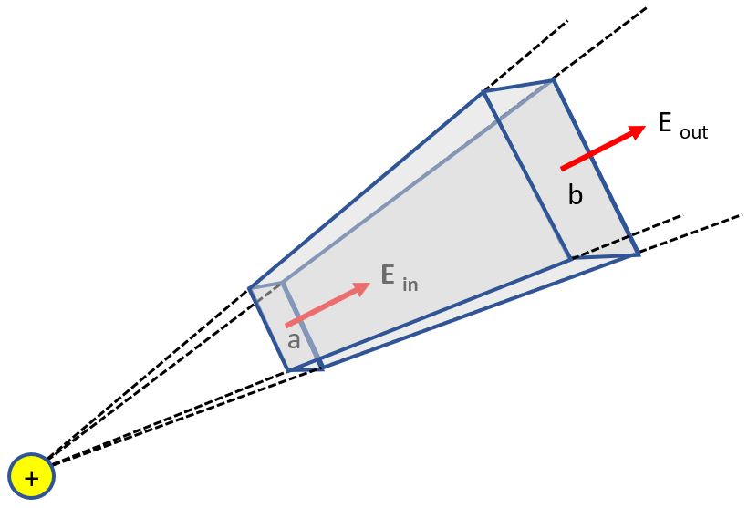
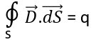

HOME BLOG EBOOKS ABOUT CONTACT SHOP
The gauss’s law states that “The electric flux passing through any closed surface is equal to the total charge enclosed by that surface”. The idea behind the Gauss’s law is straightforward, any flux that flows outward (or inward) from a surface of an object will be the flux generated due to the charge inside the object.
So what about the flux due to a charge outside the object? Can’t it also pass through the object? To answer these questions, consider a simple surface with an external charge as shown below.

For this surface, more flux will flow out of face b than the flux flowing in through face a owing to larger area of face b. The area of the face and hence the flux flowing, increases by a factor r2 as the radial distance (r) from the source increases. On the flip side, as r increases the magnitude of the flux decreases by a factor 1/r2 as per the inverse square law. This cancels out the increase in the flux due to increase in surface area and takes out the factor r from the equation. Therefore, the net flux though the surface is zero as the flux flowing in through face a is equal to the flux flowing out through face b. We chose this spherical section for convenience, but this logic works with any shape, however complex it may be. In fact, the gauss’s law is applicable to any kind of field that obeys the inverse square law.
To derive a mathematical representation for this law, consider an irregular surface as shown below, with a charge q inside it. This surface can be a real one or an imaginary one, Gauss’s law works either way. Now at any point P on the surface, consider a small surface of area dS. The surface vector will obviously be in the direction of the normal at that point, hence the area vector at point P can represented by . Let the flux density at point P be
. Therefore, the total flux emerging out or passing out of the small surface at P is
To calculate the total flux emerging out of the surface, we need to take the surface integral at every point on the surface.
Now according to Gauss’s law, this quantity is equal to the total charge q enclosed by the surface. Therefore,

Substituting the Electric field Intensity (E) for the Electric field density (D), we get another expression,

If instead of a point charge (or charges), the charge was distributed over a volume then the Gauss’s law may be expressed as,